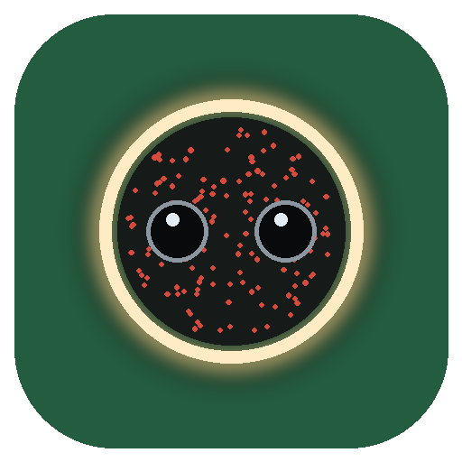
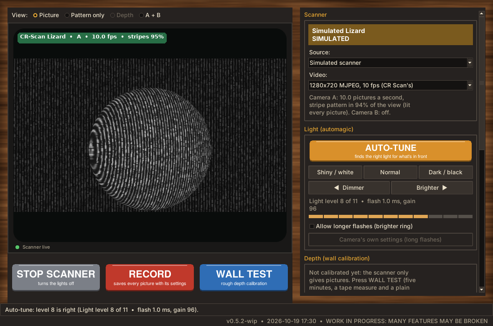
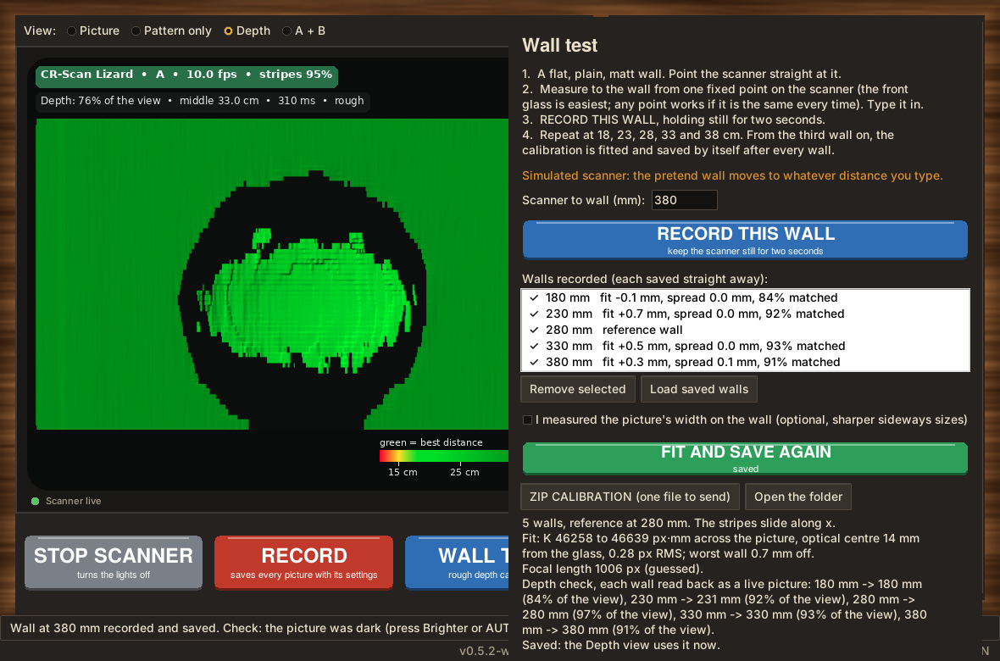
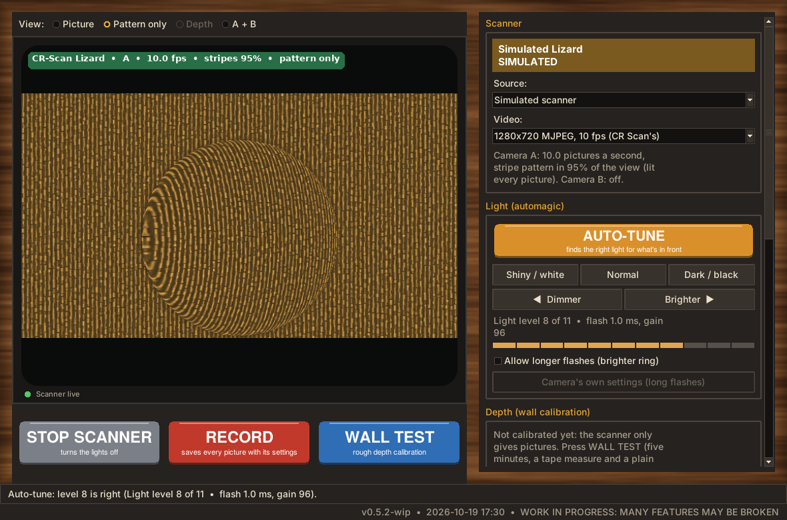
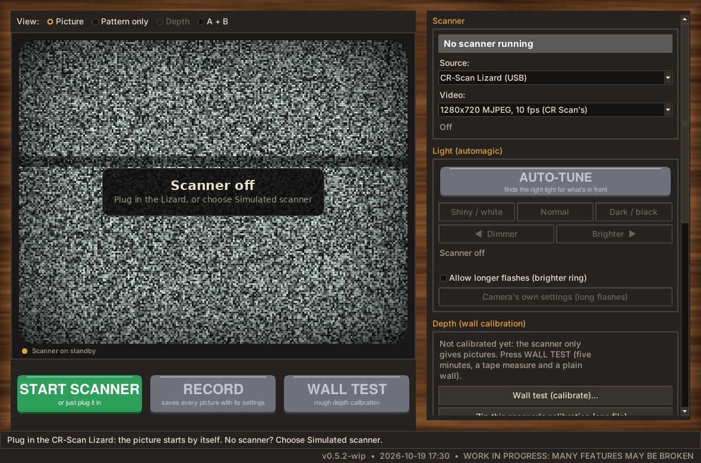

Lizard Scanner
A standalone app for the Creality CR-Scan Lizard 3D scanner. Live infrared picture, automagic buttons instead of sliders, and a five-minute wall test that turns the scanner into a depth camera. No vendor software needed.
Paused for a month or two: calibration turned out to be more boring than cleaning. The story so far is in Down the Lizard Hole.
What it does
Starts by itself
Plug the Lizard in and the picture appears (Linux). The tag on the picture shows the frame rate and how much of the view shows the projector's stripes.
Light without sliders
AUTO-TUNE, three presets, Dimmer and Brighter. The ring's flash never goes past Creality's own 1 ms unless you allow it.
Diagnostics
Ten checks, from the USB link and room infrared to how flat a wall comes out, plus one zip to attach to a bug report.
Wall test
Point it at a plain wall at a few measured distances. The app follows how the projector's stripes slide, fits a depth calibration by itself from the third wall, and keeps everything in one folder you can zip in one click.
Live depth
Distance colours with relief shading, and one click to save the view as a point cloud (.ply).
Capture and play back
Every saved picture is stamped with its time, camera, exposure, gain and every other setting, plus your notes; plays back as if the scanner were there.
Ready for Scantastic
The Lizard speaks the same camera language as Scantastic's other scanners, so it can move in later.
Screens




All screenshots are of the app's built-in simulated scanner, not a real Lizard.
What does not exist yet
- A run on a real Lizard with this app (the camera control underneath has worked on one, in Who are yoUSB?).
- Full 3D scans joined from many views: that is Scantastic's job once the Lizard moves in.
- Lens distortion correction; Creality's own factory calibration.
- Tested Windows and macOS camera paths (written, never run).
- Colour: the Lizard's pictures are infrared.
Install
- Download the repository (green Code button, Download ZIP) or the latest pre-release, and unzip it.
- Double-click
Lizard-Scanner-Linux.sh(choose Run),Lizard-Scanner-Windows.batorLizard-Scanner-Mac.command(right-click, Open, the first time). - The first start installs numpy and Pillow into its own folder. On Linux you may need
sudo apt install python3-tk python3-venv v4l-utilsonce. - No scanner? Choose Simulated scanner in the Source box.